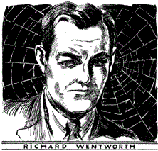
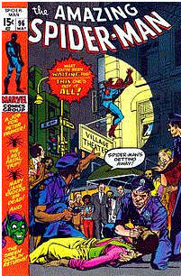

Челове́к-пау́к (англ. Spider-Man), настоящее имя Пи́тер Па́ркер (англ. Peter Parker) —
вымышленный персонаж, супергерой комиксов издательства Marvel Comics, созданный Стэном
Ли и Стивом Дитко. С момента своего первого появления на страницах комикса Amazing
Fantasy №15 (рус. Удивительная фантазия, август 1962) он стал одним из самых популярных
супергероев. Ли и Дитко задумывали персонажа как подростка-сироту, воспитанного дядей и
тётей, совмещающего жизнь обычного студента и борца с преступностью. Человек-паук
получил суперсилу, увеличенную ловкость, «паучье чутьё», а также способность держаться на
отвесных поверхностях и выпускать паутину из рук с использованием прибора собственного
изобретения.
До появления Человека-паука в 1960-х подростки в комиксах о супергероях обычно были всего
лишь их помощниками. Комиксы о Человеке-пауке разбили эти стереотипы, представив героем
одинокого подростка, отвергаемого многими сверстниками[3] и у которого не было опытного
наставника, как Капитан Америка у Баки или Бэтмен у Робина. После смерти своего дяди Бена
ему пришлось самостоятельно узнавать, что «с большой силой приходит и большая ответственность».
Marvel выпустила множество серий комиксов о Человеке-пауке, самой первой из которых стала
The Amazing Spider-Man (рус. Удивительный Человек-паук), продолжающаяся до сих пор. За
годы своего существования Питер Паркер был то робким учеником средней школы, то
проблемным студентом колледжа, то женатым учителем, а также членом нескольких команд
супергероев, таких как Мстители, Новые Мстители, Фантастическая четвёрка. Наиболее
характерным образом Питера Паркера вне жизни Человека-паука является образ независимого
фотографа, который использовался в комиксах на протяжении многих лет.
С увеличением своей популярности Человек-паук вышел за пределы комиксов, стал появляться
на телевидении, в видеоиграх и кинофильмах и является одним из самых коммерчески
успешных супергероев[4]. В трилогии художественных фильмов его роль исполнил актёр Тоби
Магуайр, а в перезапуске франшизы, первый фильм которой вышел в 2012 году, его сыграл
британский актёр Эндрю Гарфилд[5]. Рив Карни предстал в роли Питера Паркера в бродвейском
мюзикле 2010 года «Человек-паук: Погасить темноту» (англ. Spider-Man: Turn Off the Dark)[6].
В 2011 году персонаж занял 3 место в списке «Сто лучших героев комиксов всех времён» по
версии IGN[7].
Коммерческий успех и серии комиксов
В 1962 году, после успеха Фантастической четвёрки и
других супергероев, редактор и сценарист Marvel Comics Стэн
Ли обдумывал идею создания нового персонажа. По его
словам, идея Человека-паука возникла на волне всплеска
популярности комиксов среди подростков, и у него возникло
желание создать персонаж, который тоже был бы
подростком[9]. В своей автобиографии Ли привел в качестве
источника вдохновения персонажа одного журнала по
прозвищу «Паук», который не был супергероем, но боролся с
преступностью[8], и признался, что основным толчком для появления самого героя стало
наблюдение за мухой, карабкающейся по стене, — Ли даже упомянул, что рассказывал эту
историю так часто, что уже и не помнит, правда ли это[10]. Художник Стив Дитко в 1990 году в
своей статье рассказал более прозаичную историю:
Во время разговора со мной о Человеке-пауке Стэн сказал, что ему нравится имя Человек-
ястреб, но у DC уже был такой герой. Marvel как раз представили Человека-муравья и Осу, так
что имя нового героя могло подпадать под категорию насекомых (хотя, разумеется, пауки не
насекомые). Я думаю, что Стэн придумал имя именно тогда
Ли пришёл к Мартину Гудману, редактору Marvel, чтобы получить одобрение персонажа. В
интервью 1986 года он рассказал о подробностях обсуждения и о сомнениях Гудмана в успехе
персонажа[1a], несмотря на которые он позволил Ли испытать героя в будущем выпуске
Amazing Fantasy №15 (август 1962)[12].
В интервью 1982 года Джек Кирби заявил, что Ли практически не участвовал в создании
персонажа и что Человек-паук был порождён Кирби и Джо Саймоном, которые в 1950 году
предлагали компании Crestwood включить в комикс Black Magic их персонажа по имени
Серебряный паук, но этот издатель вскоре обанкротился[1b]. Однако Саймон оспорил
причастность Кирби к Человеку-пауку в автобиографии, утверждая, что Black Magic не имел
отношения к созданию и что он (Саймон) придумал имя «Человек-паук» (которое позже
изменили на «Серебряного паука»), пока Кирби обрисовывал историю и способности персонажа.
Обложка Amazing Fantasy №15 (август 1962). Первое появления Человека-паука.
Художники: Джек Кирби и Стив Дитко
Историк комиксов Грег Трекстон писал, что Ли, после получения одобрения от Гудмана,
связался с Кирби. Кирби предложил Ли идею его Серебряного паука/Человека-паука 1950 года,
где обычный парень находит в паутине кольцо, которое придаёт ему суперспособности. Ли
понравилась идея, и он предложил Кирби нарисовать несколько страниц. Стив Дитко тогда
занимался их покраской[1c]. Когда Кирби показал Ли готовый материал из шести страниц,
вспоминает последний, «Я возненавидел того героя. Не то, чтобы всё было плохо, — просто это
был не тот герой, которого я хотел; он был слишком героическим»[13]. Саймон позже написал,
что Ли хотел получить «худого и молодого парня со сверхспособностями, а получил Капитана
Америку, умеющего стрелять паутиной»[1d].
Ли привлёк к работе Дитко, работа которого ему понравилась, хотя позже он заменил
обложку, сделанную Дитко, на ту, что нарисовал Кирби. Дитко сказал:
Страницы Человека-паука, который Стэн мне показал, практически вообще не изображали
главного героя в костюме. На самом деле он был изображён только на обложке и в конце, где
он прыгает на тебя с пистолетом, стреляющим паутиной... В общем, действие первых пяти
страниц проходило дома и рассказывало о том, как парень нашел кольцо, чтобы стать
Человеком-пауком
Дитко также рассказал:
Первое, что я сделал, — это начал работать над костюмом. Важнейшей частью супергероя.
Но я столкнулся с кучей дизайнерских проблем. Для примера: из-за способности карабкаться по
поверхностям у него не должно было быть тяжелой обуви, можно спрятать механизм для
запуска паутины или оставить в кобуре и т. п. ... Я не был уверен, понравится ли Стэну идея
скрыть лицо героя под маской, но я всё же сделал это, чтобы спрятать слишком юное лицо.
Кроме того это нагоняло таинственности на героя...
Дитко однажды рассказал о своём вкладе в героя Гари Мартину в Comic Fan №2 (лето 1965):
«Стэн Ли придумал имя и концепцию. Я сделал костюм, пускатель паутины на запястье и
эмблему паука»[16]. Также художник Эрик Стэнтон в одном интервью сказал, что, хоть его
вклад в комикс был почти нулевой, он всё же предложил несколько идей, но большую часть
работы сделал Дитко.
Через несколько месяцев после первого появления Человека-паука в Amazing Fantasy №15 в
августе 1962 года издатель Мартин Гудман увидел, сколько заработал этот комикс, и понял, что
он стал одним из самых успешных комиксов, выпущенных Marvel Comics[18]. Первый выпуск
отдельной серии The Amazing Spider-Man №1 вышел в марте 1963 года, и вскоре серия стала
самой прибыльной серией Marvel[19], а главный герой — притчей во языцех. В 1965 году
журналом Esquire был устроен опрос, по результатам которого выяснилось, что студенты ставят
Человека-паука и его коллегу Халка в один ряд с такими культурными символами как Боб
Дилан и Че Гевара. Один читатель сказал, что ему нравится Человек-паук, потому что «у него
бывают несчастья, проблемы с деньгами, и он сталкивается с житейскими проблемами. Короче,
он один из нас»[20].
В начале 1970-х комиксы о Человеке-пауке также изменили сами законы о содержании
комиксов, в частности, запрет на любое упоминание о наркотиках, даже негативное,
посредством введения системы цензуры Comics Code Authority. Тем не менее, в 1970 году
департамент здравоохранения, социального обеспечения и образования при администрации
президента Ричарда Никсона попросил Стэна Ли устроить рекламу против наркотиков в одном
из популярных комиксов Marvel[21]. Ли выбрал The Amazing Spider-Man; выпуски №96—98
(май — июль 1971) были посвящены негативному влиянию наркотиков: Гарри Озборн, друг
Паркера, начинает принимать наркотики и становится настолько больным, что Человек-паук в
очередной битве победил Зелёного гоблина Нормана Озборна, отца Гарри, просто показав ему
его сына[21]. Несмотря на то, что сюжет имел чётко обозначенную антинаркотическую
направленность, он не был согласован с органами Comics Code Authority и был запрещён к
печати. Marvel опубликовала три выпуска, несмотря на запрет ассоциации, и продажи были так
высоки, что это дискредитировало некоторые аспекты политики Comics Code, которые
впоследствии были пересмотрены.
Выпуск Amazing Fantasy №15 считается «Святым Граалем» Серебряного века комиксов[22].
Оригинальная копия этого выпуска, качество которой было оценено специальной компанией
CGC в 9,6 баллов из 10, была продана за $1,1 млн неизвестному коллекционеру 7 марта 2011
года, что сделало его одним из самых дорогих комиксов, проданных за всю историю, и самым
дорогим комиксом Серебряного века[23]. В выпуске 2008 года The Official Overstreet Comic
Book Price Guide №38 опубликовал 21 наиболее популярный комикс Серебряного века среди
коллекционеров[24], в котором лидирует Amazing Fantasy №15.
Спустя год после успешного дебюта, в марте 1963 года, Человек-паук получил собственную
серию комиксов под названием The Amazing Spider-Man (рус. Удивительный Человек-паук),
которая продолжается до сих пор. После №38, вышедшего в июле 1966 года, место Стива Дитко
на посту иллюстратора занял Джон Ромита-старший и занимал его следующие несколько лет.
Ромита запустил The Spectacular Spider-Man (рус. Впечатляющий Человек-паук) — журнал,
ориентированный на более взрослых читателей, однако после двух номеров выпуск журнала
прекратился. Несмотря на это, его принято считать первым спин-оффом о Человеке-пауке,
помимо ежегодника основной серии, выпущенного в 1964 году[25] .
В 1972 году была запущена вторая постоянная ежемесячная серия о
Человеке-пауке — Marvel Team-Up (рус. Марвел Команда), где
Человек-паук работал в паре с другими супергероями и злодеями. В
1976 году была снова запущена Peter Parker, The Spectacular Spider-
Man, которая стала второй одиночной серией Человека-паука.
Третья серия комиксов Web of Spider-Man (рус. Паутина Человека-
паука) стартовала в 1985 году, заменив Marvel Team-Up. Запуск
четвёртой ежемесячной серии — Peter Parker: Spider-Man (рус.
Питер Паркер: Человек-паук) — произошёл в 1990 году. Её автором
стал популярный художник Тодд Макфарлейн[26], а дебютный
выпуск вышел сразу с несколькими вариантами обложки. В общей
сложности, после запуска новых серий в 1970—1980-х годах, было
продано около 3 миллионов экземпляров всех серий. Самым
успешным периодом стали 1992—1993 года — было продано более
миллиона выпусков The Amazing Spider-Man, а в среднем число
продаж за всё время варьируется от 120 до 300 тысяч копий в год[27]. По данным компании
Diamond Comic Distributors, самым продаваемым комиксом 2000-х годов стал выпуск The
Amazing Spider-Man №583 —530 500 копий[28]. Обычно параллельно выходили только две
серии; было выпущено несколько ограниченных мини-серий, одиночных и дополнительных
выпусков[3], а также Человек-паук часто появлялся в других сериях комиксов, например, о
Фантастической четвёрке[29].
Оригинальная серия The Amazing Spider-Man продолжалась вплоть до ноября 1998 года, когда
вышел последний 441-й выпуск. Писатель и художник Джон Бирн выпустил ограниченную
серию комиксов из 13-ти выпусков, где изменил детали биографии Человека-паука: Spider-Man:
Chapter One (рус. Человек-паук: Глава первая) (декабрь 1998 — октябрь 1999)[30], в которую
входит дополнительный выпуск №0; некоторые выпуски выходили дважды в месяц. В то же
время была перезапущена оригинальная The Amazing Spider-Man Том 2 №1 (январь 1999).
Серия продолжалась вплоть до №59, после чего Marvel вернула оригинальную нумерацию,
начиная с №500 в январе 2003 года.
На 2007 год Человек-паук регулярно появлялся в The Amazing Spider-Man, New Avengers (рус.
Новые Мстители)[31], The Sensational Spider-Man (рус. Сенсационный Человек-паук), Friendly
Neighborhood Spider-Man (рус. Дружелюбный сосед Человек-паук), Spider-Man Family (рус.
Семья Человека-паука) и различных мини-сериях и альтернативных вселенных Marvel, как,
например, Spider-Man Loves Mary Jane (рус. Человек-паук любит Мэри Джейн), Marvel
Adventures Spider-Man (рус. Приключения Marvel: Человек-паук) и Marvel Adventures: The
Avengers (рус. Приключения Marvel: Мстители), а на 2011 год принимал участие в следующих
сериях: The Amazing Spider-Man, The Avengers (рус. Мстители), New Avengers и FF (сокращение
от англ. Future Foundation, рус. Фонд будущего), которая дебютировала в июне 2011 года, а
также Marvel Adventures Spider-Man, которая изменила название на Spider-Man: Marvel
Adventures (рус. Человек-паук: Приключения Marvel). В ноябре 2011 стартовала ещё одна серия
— Avenging Spider-Man (рус. Мстительный Человек-паук), сценаристом которой стал Зебб
Уэллс[32].
Когда основная серия The Amazing Spider-Man стала насчитывать уже 545 выпусков (декабрь
2007), Marvel приняла решение выпускать серию три раза в месяц, начав с выпусков №546—549
в январе 2008 года. Серия выходила трижды в месяц вплоть до ноября 2010 года, когда комикс
увеличили с 22 страниц до 30 в каждом выпуске, и серия стала публиковаться дважды в месяц
начиная с №648—649 в январе 2011 года[33], а также сменила сценариста, которым стал Дэн
Слотт.
В декабре 2012 года серия The Amazing Spider-Man была завершена на выпуске #700, последней
сюжетной аркой стала Dying Wish. Серия была заменена на The Superior Spider-Man, первый
номер которой будет выпущен в январе 2013 года[34].
По оригинальной версии, Питер Паркер представлялся как одарённый в науке подросток-сирота,
который живёт со своими дядей и тётей в Форест-Хиллс, Куинс, Нью-Йорк. Питер — отличник,
из-за чего подвергается насмешкам сверстников, зовущих его «книжным червём». В выпуске
Amazing Fantasy №15 во время научной выставки его случайно кусает радиоактивный паук.
Благодаря этому он получает «паучьи» сверхспособности, как, например, суперсилу,
способность передвигаться по стенам и феноменальную прыгучесть. Пользуясь своими
научными знаниями, Питер сконструировал устройство, которое крепится к его запястьям и
позволяет «выстреливать» паутиной. Питер берёт псевдоним Человек-паук, надевает костюм и
скрывает от всех своё настоящее лицо. Как Человек-паук он становится известной телезвездой.
Однажды на студии он упускает шанс остановить вора, который, скрываясь от полицейского,
пробежал мимо. Тогда Питер решил, что это «забота полиции, а не звезды». Спустя несколько
недель его дядя Бен ограблен и убит, и разгневанный Человек-паук отправляется на поиски
убийцы, которым оказывается тот самый вор, которого он отказался остановить. Осознав, что
«большая сила влечёт за собой большую ответственность», Человек-паук решает лично начать
бороться с преступностью[35].
После смерти дяди, чтобы прокормить себя и свою тетю Мэй, он начинает зарабатывать деньги,
за что подвергается всяческим нападкам со стороны одноклассников, а особенно Флэша
Томпсона, школьной звезды футбола. Питер получает работу фотографа в издательстве газеты
Daily Bugle и продаёт снимки главному редактору Джоне Джеймсону, который постоянно
очерняет Человека-паука на страницах издания[36][37]. Вскоре Паркер понимает, что
совмещать личную жизнь и войну с преступностью очень сложно, и даже пытается оставить
карьеру героя. После окончания старшей школы[38] Питер поступает в Государственный
Университет (вымышленное учебное заведение, аналогичное реальным Колумбийскому и Нью-
Йоркскому университетам), где знакомится с Гарри Озборном — своим соседом по комнате,
который впоследствии стал его лучшим другом. Там же он встречает Гвен Стейси, которая
становится его девушкой[39]. В период учёбы в университете тётя Мэй знакомит его с Мэри
Джейн Уотсон. Когда Питер пытается помочь Гарри в его проблемах с наркотиками, ему
становится известно, что отец Гарри, Норман, — злодей Зелёный гоблин. Узнав об этом, Питер
даже предпринял попытку оставить костюм супергероя на некоторое время[40][41]. Во время
схватки Человека-паука с Доктором Осьминогом случайно погибает детектив Джордж Стейси,
отец Гвен. По ходу своих приключений Паук завёл множество друзей и знакомых в сообществе
супергероев, которые часто приходили к нему на помощь в ситуациях, с которыми он не мог
справиться один.
В сюжете The Night Gwen Stacy Died (рус. Ночь, когда умерла Гвен Стейси) в выпусках The
Amazing Spider-Man №121—122, Человек-паук случайно убивает Гвен Стейси, пытаясь спасти
её после того, как Зелёный гоблин сбросил её либо с Бруклинского моста, что можно понять по
изображению, либо с Моста Джорджа Вашингтона, что указано в тексте[42]. Человек-паук
слишком поздно успевает зацепить Гвен паутиной и, подняв её, понимает, что она мертва. В
выпуске №121 предполагается, что Гвен погибла из-за резкой остановки на высокой скорости во
время падения. Питер винил себя в смерти Гвен и в следующем номере вступил в схватку с
Зелёным гоблином, который случайно убил сам себя[43].
Справившись с душевной травмой, Питер в итоге начинает проявлять чувства к Мэри Джейн
Уотсон, которая стала ему больше, чем другом. Питер заканчивает колледж в №185; в №194
(июль 1979 года) он встречает кокетливую Фелицию Харди, известную как Чёрная кошка[44], а
в №196 (сентябрь 1979 года) знакомится с застенчивой девушкой Деброй Уитман.
С 1984 по 1988 годы Человек-паук носил костюм, отличающийся от классического оригинала.
Чёрный с белыми вставками вариант впервые появляется в The Аmazing Spider-Man №252 (май
1984), а его история рассказывается в ограниченной серии комиксов Secret Wars (рус. Тайные
войны), где на другой планете Человек-паук участвует вместе с остальными героями Земли в
битве против суперзлодеев[45]. Новый вариант костюма сопровождался полемикой среди
поклонников комиксов, которые считали, что такая радикальная смена классического костюма
равносильна кощунству, так как костюм — главная отличительная черта Человека-паука, как
Бэтмена или Супермена[46]. Позже создатели ввели объяснение: новый костюм был симбиотом,
от которого Человек-паук смог освободиться после событий Тайных войн[47]. Позже тот же
симбиот возвращается в качестве Венома с намерением отомстить.
Как отметил журналист Кемптон Салли, главные проблемы Питера Паркера — выраженный
комплекс неполноценности и страх перед женщинами. Он антиобщественный, невезучий
молодой человек, разрываемый чувством эдиповой вины[58]. Выбрав судьбу супергероя, он
пытается помогать всем, но несмотря на это не пользуется доверием полиции, которая так и не
может определиться, кто же такой Человек-паук — бдительный герой или умный
преступник[59]. Мнение историка Бретфорда Райта:
Положение Человека-паука таково, что он неверно понят общественностью и подвергается
преследованию с её стороны. В первом номере The Amazing Spider-Man Джей Джона Джеймсон
, издатель Daily Bugle, настраивает редакцию против Человека-паука, в котором видит угрозу.
В результате негативной информации на страницах издания подозрения о таинственном
Человеке-пауке только усугубляются. В конце концов, плохая пресса добивается того, что
власти объявляют его вне закона, и, как ни странно, сам Питер получает работу фотографа в
Daily Bugle
В 1960-х издательства выпускали истории, отражающие напряженность того времени, и Marvel
не стало исключением. На страницах комиксов появлялись темы холодной войны, коммунизма.
Райт отмечает
| Награды | ||||
|---|---|---|---|---|
| Год | Награда | Категория | Номинант | Результат |
| 1963 | Alley Award | Лучшая короткая история | «Origin of Spider-Man», авторы Стэн Ли и Стив Дитко, Amazing Fantasy #15 | Победа |
| Лучший комикс о приключениях героя | The Amazing Spider-Man | Победа | ||
| 1964 | Лучший герой | Человек-паук | Победа | |
| 1965 | Лучшая серия о приключениях героя | The Amazing Spider-Man | Победа | |
| 1966 | Лучший объёмный комикс | |||
| 1967 | Лучший герой | |||
| 1968 | ||||
| 1969 | ||||
| 1997 | ||||
| 2002 | ||||
☺: